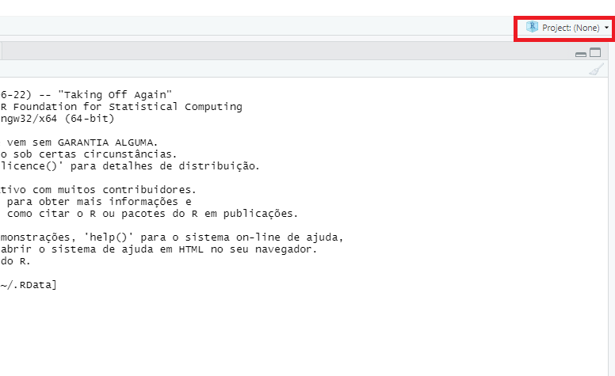
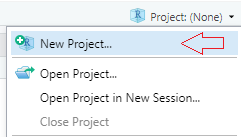

Código
dados1 <- read.table(file = "dados1.csv", sep = ";")Flavia de Jesus
5 de março de 2021
Quando estamos trabalhando com algum tipo de análise de dados no R, a primeira coisa que fazemos é importar e ler os dados que vamos utilizar, para isso existem vários pacotes que nos permitem importar arquivos de diversos formatos de extensão. Neste post veremos como importar arquivos de texto, planilhas do excel, extensões de outros programas estatísticos como SPSS e também como importar dados da internet.
Para facilitar a reprodução dos exemplos aqui, sugerimos que as pessoas interessadas copiem os arquivos disponíveis no link1, link2 e link3. Sugerimos também a criação de um projeto no RStudio para deixar a importação e a leitura dos dados de forma mais direta. Um projeto nada mais é do que uma pasta no computador. Nesta pasta, estarão todos os arquivos que usaremos para importar para o Rstudio.
Segue o passo a passo para criar um projeto:
Clique na opção “File” do menu, e então em “New Project”;
Clique em “New Directory”;
Clique em “New Project”;
Escreva o nome do diretório (pasta) onde deseja manter seu projeto;
Clique no botão “Create Project”.
O RStudio irá abrir uma nova janela feita exclusivamente para o projeto criado. Para criar um novo script onde escreveremos nossos código é só ir em File > New File > R Script.
Uma outra forma de criar projetos no R é clicando na aba no canto superior direito, onde se abrirá um menu com opções para criar projetos e também aparecerão todos os projetos existentes no RStudio, possibilitando uma fácil navegação entre os seus projetos.

Nas opções do menu, selecione a opção “New Project”.

utilsUm dos caminhos mais flexiveis de importação de dados é a função read.table(). Esta é uma função que já vem instalada com o R, faz parte do pacote base utils do R, e importa arquivos nos formatos csv e txt. É um dos principais meios de leitura de dados tabulares em R. Para utilizar é bem simples:
Para utilizar funções do pacote utils não precisamos carregá-lo na memória usando library(). Podemos importar os dados de foma direta.
Dentro da função read.table() é utilizado o argumento file para colocar o nome do arquivo que será importado e o segundo argumento é o sep que indica qual o símbolo separador de colunas, que neste caso é o ponto e vírgula.
Repare que se não tendo criado um projeto e colocado o arquivo dados1.cvs dentro da pasta, seria necessário escrever o caminho completo onde o arquivo está no computador.
| V1 | V2 | V3 | V4 | V5 | V6 | V7 | |
|---|---|---|---|---|---|---|---|
| 1 | Febre | DificuldadeRespiratoria | Tosse | Coriza | DorGarganta | Diarreia | Cefaleia |
| 2 | Sim | Nao | Sim | Sim | Sim | Nao | Nao |
| 3 | Sim | Sim | Nao | Nao | Nao | Nao | Sim |
| 4 | Nao | Sim | Nao | Nao | Nao | Nao | Nao |
| 5 | Nao | Nao | Nao | Nao | Nao | Nao | Nao |
| 6 | Nao | Sim | Nao | Nao | Nao | Nao | Sim |
Exportando dados
Neste pacote temos write.table() que é a principal função para exportar seus dados do R. Ela funciona para exportar arquivos em formato de texto simples .csv e .txt e usa basicamente os mesmos argumentos da função read.table().
readrEste pacote também é utilizado para importar arquivos do tipo csv e txt. Ele é bastante semelhante com o pacote utils do R base, porém há algumas diferenças notáveis entre eles como: as funções de readr são mais rápidas que suas equivalentes do R base; produzem tibbles e não convertem vetores de caracteres em fatores. Muitas funções do readr são focadas em transformar arquivos simples em data.frames. Algumas das funções para importar arquivos são:
read_csv(): para arquivos delimitados por vírgulas.read_csv2(): para arquivos separados por ponto e vírgula.read_tsv(): para arquivos delimitados por tabulações.read_delim(): para arquivos com qualquer delimitador.read_fwf(): para arquivos compactos que devem ter a largura de cada coluna especificada. Para especificar pode se utilizar fwf_widths() ou fwf_positions().read_table(): para arquivos de texto tabular com colunas separadas por espaço.Lembre-se que se o pacote não estiver disponível no seu computador, você pode instalar com a função install.packages("readr") e antes de usar qualquer pacote que não faça parte do R base, você deve carregá-lo com library(readr).
Deste pacote podemos utilizar a função read_cvs2(), que importa arquivos em formato csv.
O conteúdo do arquivo é convertido para um objeto do tipo data.frame no R. Para visualizar as primeiras linhas e colunas dos nossos dados é possível utilizar a função head().
| Febre | DificuldadeRespiratoria | Tosse | Coriza | DorGarganta | Diarreia | Cefaleia | |
|---|---|---|---|---|---|---|---|
| 1 | Sim | Nao | Sim | Sim | Sim | Nao | Nao |
| 2 | Sim | Sim | Nao | Nao | Nao | Nao | Sim |
| 3 | Nao | Sim | Nao | Nao | Nao | Nao | Nao |
| 4 | Nao | Nao | Nao | Nao | Nao | Nao | Nao |
| 5 | Nao | Sim | Nao | Nao | Nao | Nao | Sim |
| 6 | Nao | Nao | Nao | Nao | Nao | Nao | Nao |
Exportando dados
write_delim() é a principal função do pacote readr para exportar um data.frame em formato de texto simples .csv, .txt e usa basicamente os mesmos argumentos da função read_delim().
Para utilizar os dados dos data.frame’s diamonds e mpg é necessário ter o pacote ggplot2 instalado no R.
Outra função para exportação de dados é a write_csv(), ela importa arquivos em formato .csv.
O R não possui uma função nativa para importar dados do Excel, portanto deve-se instalar e utilizar certos pacotes para realizar esta operação. Existem diversas opções e os principais pacotes são readxl, xlsx, XLConnect e tidyxl. Apesar destes pacotes terem objetivos semelhantes, cada um tem suas peculiaridades, então aconselha-se estudar cada um desses pacotes e assim decidir qual melhor atende às suas necessidades. Porém, neste post vamos utilizar apenas o pacote readxl que é um dos mais facéis e diretos de se utilizar. Este pacote serve para importar e ler planilhas do Excel nos formatos xlsx ou xls. A seguir estão listadas algumas funções para importação e leitura de dados:
read_excel(): esta função detecta automaticamente a extensão do arquivo, e importa arquivos do tipo xsl e xlsx.read_xsl(): importa arquivos no formato xsl.read_xlsx(): importa arquivos no formato xlsx.Com relação à instalação e utilização do pacote, o mesmo procedimento considerado para o pacote readr deve ser feito aqui, tendo em vista as funções install.packages() library().
Para ilustração, deste pacote vamos utilizar a função read_xlsx() para arquivos com formato xlsx. Iremos utilizar os mesmos dados utilizados anteriormente porém com nome e formato diferente.
Podemos comparar os resultado utilizando a função head().
| Febre | DificuldadeRespiratoria | Tosse | Coriza | DorGarganta | Diarreia | Cefaleia | |
|---|---|---|---|---|---|---|---|
| 1 | Sim | Não | Sim | Sim | Sim | Não | Não |
| 2 | Sim | Sim | Não | Não | Não | Não | Sim |
| 3 | Não | Sim | Não | Não | Não | Não | Não |
| 4 | Não | Não | Não | Não | Não | Não | Não |
| 5 | Não | Sim | Não | Não | Não | Não | Sim |
| 6 | Não | Não | Não | Não | Não | Não | Não |
Exportando dados
Para importar dados para o Excel vamos utilizar o pacote writexl, ele possui a função write_xlsx() que exporta arquivos em formato xlsx.
data.tableEste pacote fornece uma versão melhorada de data.frames, bem como um conjunto de ferramentas para dividir, aplicar e combinar dados. Além disso o pacote disponibiliza uma função muito eficaz para importação de dados em diversos formatos. Tudo isso com baixo tempo de processamento e uso eficiente da memória. Algumas de suas funções são:
fread(): esta função é similiar ao read.table(), porém é mais rápida e mais coveniente. Argumentos como sep, colClasses e nrows, são detectados de forma automática. Esta função deve ser utilizada para leitura de arquivos delimitados.data.table(): esta função serve para importar dados em formato csv.Novamente, devemos nos atentar se o pacote está disponível e carregá-lo adequadamente com as funções install.packages() e library().
Deste pacote vamos utilizar a função fread() para importar o arquivo em formato csv.
Para checar se os dados foram importados corretamente, podemos fazer
| Febre | DificuldadeRespiratoria | Tosse | Coriza | DorGarganta | Diarreia | Cefaleia | |
|---|---|---|---|---|---|---|---|
| 1 | Sim | Nao | Sim | Sim | Sim | Nao | Nao |
| 2 | Sim | Sim | Nao | Nao | Nao | Nao | Sim |
| 3 | Nao | Sim | Nao | Nao | Nao | Nao | Nao |
| 4 | Nao | Nao | Nao | Nao | Nao | Nao | Nao |
| 5 | Nao | Sim | Nao | Nao | Nao | Nao | Sim |
| 6 | Nao | Nao | Nao | Nao | Nao | Nao | Nao |
Exportando dados
fwrite() é principal função do pacote data.table para exportar um data.frames em formato de texto simples .csv, .txt e usa basicamente os mesmos argumentos da função read_delim().
havenO R também é bastante flexível quanto à importação de dados de outros softwares estatísticos. Este pacote serve para ler arquivos gerados por outros softwares, como SPSS, SAS e STATA. Algumas funções que podemos utilizar são: read_sas() para dados em sas, read_spss() para dados em SPSS e read_dta() e read_stata() para dados gerados em .dta e pelo Stata, respectivamente.
Devemos sempre verificar se o pacote está instalado e carregá-lo antes de qualquer uso. Lembrando que a instalação é feita com a função install.packages() e o pacote é carregado com a função library().
Para apresentar o pacote, vamos utilizar a função read_sas() para leitura de dados em SAS. Note que a extensão desses arquivos é dada por .sas7bdat.
Para nos certificar que o arquivo foi carregado de forma correta, podemos fazer
| CPF | Nome | Nascimento | Sexo | Est_civil | Telefone | CEP | ||
|---|---|---|---|---|---|---|---|---|
| 1 | 520.017.… | Reginald … | 1991-03-06 | M | Solteiro | rpeters0@dr… | (78) 7886… | 64117… |
| 2 | 437.566.… | Ana Silby | 1996-10-02 | M | Solteiro | asilby1@web… | (46) 6925… | 95573… |
| 3 | 629.681.… | Adda MacK… | 1991-01-09 | M | Solteiro | amackenzie2… | (77) 9040… | 05071… |
| 4 | 881.223.… | Stacia De… | 1997-12-25 | F | Casado | sdeerr3@loc… | (27) 9562… | 08501… |
| 5 | 161.145.… | Samuele S… | 1981-06-15 | F | Solteiro | sseager4@gi… | (88) 0908… | 04302… |
| 6 | 439.045.… | Wilow Sim… | 1990-12-05 | F | Casado | wsimonitto5… | (11) 6925… | 78118… |
Exportando dados
Este pacote possui três funções para exportar dados para o SAS, SPSS e Stata.
Uma das grandes vantagens de se utilizar o R é a quantidade de dados que podem ser importados através da internet. Isso é especialmente prático pois uma base de dados pode ser atualizada através de um simples comando, evitando o tedioso trabalho de coleta manual. Há alternativas para quem precisa utilizar algum arquivo da internet porém não quer fazer o download toda vez que os dados forem atualizados ou simplesmente pelo fato de não querer ficar armazenando dados no seu computador. No R pode-se executar a leitura do arquivo diretamente da internet, em que o programa simplesmente vai acessar e importar os dados através da URL, conforme exemplo abaixo:
Neste exemplo foi utilizada a função read_csv2() do pacote readr, porém poderia ser considerada qualquer outra função de outros pacotes que importam dados em csv. A checagem se os dados foram obtidos de forma correta pode ser feita novamente com a função head().
| PROGRAMA_COMUM | ID_ELO_LOA_RELATIV_IN… | ID_ARQ | DTREF | UG | ANOINICPPA | CODPROGR | |
|---|---|---|---|---|---|---|---|
| 1 | 0 | 4292 | 51 | 31/12/… | 0180… | 2014 | 001 |
| 2 | 0 | 4294 | 51 | 31/12/… | 0210… | 2014 | 002 |
| 3 | 0 | 4293 | 51 | 31/12/… | 0210… | 2014 | 002 |
| 4 | 0 | 4297 | 51 | 31/12/… | 0210… | 2014 | 003 |
| 5 | 0 | 4296 | 51 | 31/12/… | 0210… | 2014 | 003 |
| 6 | 0 | 4295 | 51 | 31/12/… | 0210… | 2014 | 003 |
… with 17 more variables: INDICADOR
arrowImportando dados
Este pacote permite trabalhar de forma eficiente com conjuntos de dados de tamanho massivo em vários formatos diferentes. Nesse pacote é possível importar arquivos de formato .csv, .tsv, .feather entre outros. Algumas de suas funções para importação são:
read_feather(): Para ler arquivo em formato Feather.read_parquet(): Para ler arquivo Parquet.read_delim_arrow(): Para arquivos delimitados.read_csv_arrow(): Para ler arquivos em formato .csv.read_tsv_arrow(): Para ler arquivos em formato .tsv.read_json_arrow(): Para ler arquivo JSON.Não iremos entrar em detalhes sobre este pacote aqui, mas nesse link vocês podem ver uma aplicação do pacote com uma base de dados com 37GB.
Exportando dados
Este pacote possui algumas funções de exportação de dados como: write_feather(), write_ipc_stream() e write_arrow, elas exportam dados em formato .csv, .txt e .feather.
Esses foram apenas alguns dos diversos pacotes e funções que podemos utilizar para importar dados no R. Apesar de alguns pacotes apresentados anteriormente possuirem funções similares, cada um tem suas diferenças. Devemos também entender as diferentes características de cada formato de arquivo e como tirar vantagem deste conhecimento em cada situação. Ao discutir qual formato é o melhor a ser utilizado alguns pontos devem ser levados em conta como: velocidade de importação e exportação, tamanho do arquivo e compatibilidade com outros programas e sistemas.
Mas isso é assunto para outro post. Por enquanto, ficam aqui algumas referências para quem quiser ler mais sobre o assunto.
https://livro.curso-r.com/index.html